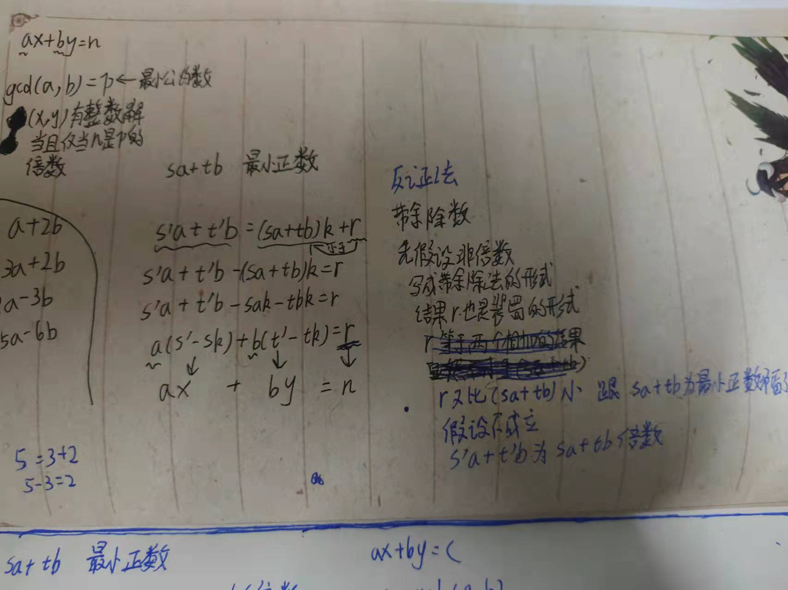

舀水问题。
手舀，非证明。用8L和13L的两个被子舀一次2L和3L和4L
都是可以舀的。也可以用算式表达出来
四个预备知识：
约数和倍速：如果一个整数a能被正整数b整除，也就是说存在另一个整数p使得a=bp或者a/b=p，那么我们就称b是数a的约数或因数，a是数b的倍数
正整数a的两个倍数的和或差还是a的倍数
公约数和最大公约数，如果正整数p同时是两个整数a，b的约数，我们就称p为a和b的公约数。a和b的所有公约数中最大的那个数称为a和b的最大公约数
带余除法：给定一个整数a和一个正整数p，总能找到一个整数b使得a=bq+r，其中0<=r<q。我们称r为a被q除的余数
斐蜀引理证明：

斐蜀引理引用到舀水问题
8x+13y时候。gcd(8,13)=1，所有求的数都是1的倍数。所以可以舀出来，也就是可成立
8x+13y=2,=3,=4都可以舀出来
斐蜀引理推论
一个大于1的正整数，如果只有1和它本身两个约数，就称它为素数。两个整数的最大公约数如果为1，就称这两个数互素
推论一：
两个整数a和b互素当且仅当下面(x,y)方程有整数解
ax+by=1
1 | a和b互素了，最大公约数是1，那么根据斐蜀定理ax+by=1肯定有解 |
推论二：
如果素数p整除两个整数a和b的乘积ab，则p必然会整除a或b